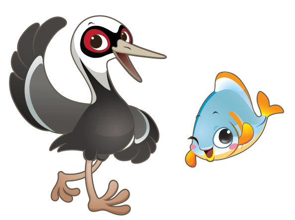

탐험 방법 0 · 게임 전에 가볍게
낙동강 이해력 높이기
물길이 만든 보금자리, 스무 개 칩의 이야기.
강의 모습에서 식물과 동물, 다섯 지역까지 하나의 흐름으로 읽어 봐요.
약 3~5분 · 자연환경 5 + 식물 5 + 동물 5 + 지명 5 · 시험 없이 읽어요

담수란? 소금기가 거의 없는 물이에요. 강·하천·연못·습지 같은 곳을 떠올려 보세요.
생물다양성이란? 여러 생물의 종류뿐 아니라, 생물이 사는 환경과 같은 종 안의 차이까지 아우르는 말이에요.
스무 개 사진 칩 이야기를 준비하고 있어요…
이제, 발견하러 갈까요?
배운 내용을 게임에서 찾아봐요
모두 외우지 않아도 괜찮아요. 궁금하면 언제든 다시 읽어 보세요.
학습 자료와 출처
사진 칩과 기본 설명은 확정 교구 「재루·담이와 함께하는 낙동강 생태 탐험」의 미션카드·설명서를 바탕으로 학생 눈높이에 맞춰 정리했어요. 기관 자료는 아래에서 더 살펴볼 수 있어요.
- 국립낙동강생물자원관 · 담수생물다양성이란? ↗ — 담수와 생물다양성의 뜻, 보전의 중요성
- 국립낙동강생물자원관 · 살아있는 생태계, 한반도 ↗ — 생물과 서식 환경을 함께 알아보기
- 국립낙동강생물자원관 · 재루와 담이 소개 ↗ — 재두루미와 각시붕어를 모티프로 한 캐릭터
- 부산광역시 사하구 · 을숙도 생태·철새공원 ↗ — 낙동강 하구의 철새와 환경
생물은 여러 구역에 걸쳐 살 수 있고, 서식 환경은 계절과 장소에 따라 달라져요. 게임판의 칩 자리가 실제 서식 위치를 뜻하는 것은 아니에요.